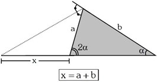

Geometría: congruencia y semejanza de triángulos
Congruencia de triángulos
Primer criterio de congruencia
Dos triángulos que tienen sus tres lados iguales, son congruentes. Este criterio se conoce como Lado, Lado, Lado (LLL); es decir, ∆ABC ∆A'B'C' dado que AB = A'B', AC = A'C' y BC = B'C'.
Segundo criterio de congruencia
Dos triángulos que tienen dos ángulos iguales, así como el lado comprendido entre ellos respectivamente igual, son congruentes. Este criterio se conoce como Ángulo, Lado, Ángulo (ALA). ∆ABC ≅ ∆A'B'C' dado que ∢B = ∢B', BC = B'C' y ∢C = ∢C'.
Tercer criterio de congruencia
Dos triángulos que tienen dos de sus lados iguales, así como el ángulo comprendido entre ellos también igual, son congruentes. Este criterio es conocido como Lado, Ángulo, Lado (LAL); ∆ABC ≅ ∆A'B'C' dado que BC = B'C', ∢C = ∢C' y CA = C'A'.
Aplicaciones de la congruencia de triángulos
Teorema de los Puntos Medios (Base Media): El segmento que une los puntos medios de los lados de un triángulo es paralelo al tercer lado y mide la mitad de la longitud del lado al cual es paralelo.
Teorema de la Bisectriz: Cualquier punto de la bisectriz de un ángulo equidista de los lados del ángulo.
Teorema de la Mediatriz: Cualquier punto de la mediatriz de un segmento equidista de los extremos del segmento
Teorema de la Mediana Relativa a la Hipotenusa: En todo triángulo rectángulo se cumple que la longitud de la mediana relativa a la hipotenusa es la mitad de la longitud de la hipotenusa.
Observación: En todo triángulo rectángulo, la mediana relativa a la hipotenusa está contenida en la Recta de Euler.
Propiedades en los Triángulos Isósceles
1.- En todo triángulo isósceles, si por un punto de su base se trazan perpendiculares a los lados congruentes, la suma de las longitudes de estas perpendiculares es igual a una de las alturas congruentes.
2.- En todo triángulo isósceles, por un punto que se encuentra sobre la prolongación de su base se trazan perpendiculares a los lados congruentes, la diferencia de las longitudes de estas perpendiculares es igual a una de las alturas congruentes.

3.- Si por un punto que se encuentra sobre la base de un triángulo isósceles se trazan rectas paralelas a los lados congruentes, la suma de las longitudes de estas paralelas es igual a la longitud de los lados congruentes
4.- Si por un punto que se encuentra sobre la prolongación de la base de un triángulo isósceles se trazan paralelas a los lados congruentes, la diferencia de las longitudes de estas paralelas es igual a la longitud de los lados congruentes.
Propiedades en los Triángulos Equiláteros
1.- En todo triángulo equilátero, si por un punto cualquiera de su interior se trazan perpendiculares a los tres lados, la suma de las longitudes de estas perpendiculares es igual a la longitud de una de las alturas del triángulo.
2.- Si por un punto exterior a un triángulo equilátero relativo a uno de sus lados, se trazan perpendiculares a los tres lados, la longitud de la altura del triángulo es igual a la suma de las longitudes de las perpendiculares extremas menos la longitud de la perpendicular intermedia.
3.- Si por un punto que se encuentra en el interior de un triángulo equilátero, se trazan paralelas a los tres lados, la longitud de uno de los lados del triángulo es igual a la suma de las longitudes de las paralelas.
4.- Si por un punto exterior a un triángulo equilátero, relativo a uno de sus lados, se trazan paralelas a sus tres lados, la longitud de uno de los lados del triángulo es igual a la suma de las longitudes de las dos paralelas extremas menos la longitud de la paralela intermedia.
Triángulos Rectángulos Notables
Son un grupo de triángulos rectángulos donde son conocidas las medidas angulares y a partir de ellas es posible determinar las proporciones de sus lados y viceversa.
Propiedades especiales
1. Si
2. Si
3. Si
4. Si
Información de: